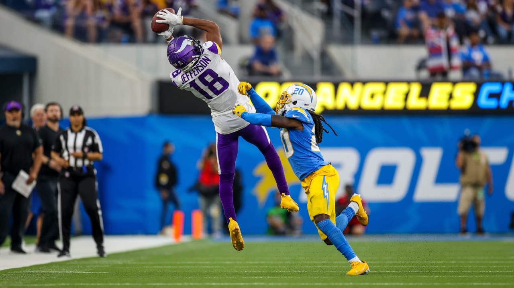

NFl JJ
As the NFL draft started, Jefferson expected to be taken in the first round.
The Minnesota Vikings ended up taking him 22nd overall.
His career immeadiately got off to a hot start. In his first ever start, JJ finished with 175 yards and 2 touchdowns against a loaded Titans defense.
He would end up breaking the rookie receiving yards record, finishing the season with 1400 yards. He would then become one of the only rookies to be named to the Pro Bowl.
As the seasons continued, people realized he was going to be one of the best wide recievers. In 2021, he finished with 10 tds and 1600 yards. After earning his second Pro Bowl selection, it was clear that JJ was the next Randy Moss for Minnesota. Fans loved him and he quickly became a household name with his signature dance, the griddy.
2022 had many more things in store for JJ. He had one of the best seasons for a Wide Reciever in the NFL ever, putting up 128 receptions, 1809 yards and 8 touchdowns.
When the season ended, Jefferson won OPOY(Offensive Player of the Year).
But, in 2023, Jefferson suffered a hamstring injury and later a chest injury and he couldn't play for most of the season, but for the 8 games he played, he put up over 1000 yards and 5 touchdowns, proving he was still the best reciever in the NFL.